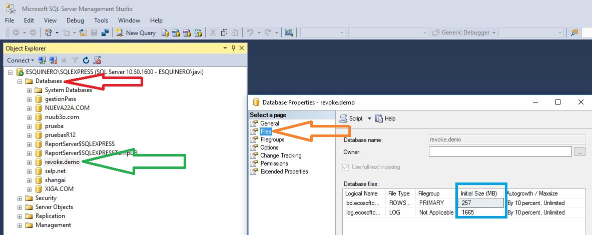

Bienvenido al maravilloso mundo de Borrar es igual a crecer e ir más lento, o muuuucho más lento.
Como mención especial antes de iniciar el/los ejemplos, el manager que utilizó en este equipo, de sql que veremos en las imágenes, esta en Inglés.
Si dispones de una edición en Castellano, todas las opciones están dispuestas del mismo modo. Es posible, que en esta misma demo, o incluso en otras, alguna de las imagenes, sea en Castellano.
La primera pregunta, es obvia, ¿Porqué?
La respuesta es más o menos simple. Borrar no es igual a eliminar ni tan siquiera vaciar. Toda eliminación (por defecto) conlleva el rastro de digestión que tiene que hacer el sistema en su archivo de registro ldf, o lo que es lo mismo, registrar con su script particular esta ejecución sql.
De tal modo que se pueda, depende del proceso a seguir, revertir la transacción.
Además, los datos se almacenan en bloques, y al borrar, no se reordenan los datos, para ocupar los bloques, sino que estos quedan libres, por tanto borrar no es indicativo de más espacio, solo de tener espacio sin asignar.
Una vez que esta claro, que borrar no es lo que parece, pasemos a un entorno más práctico.
Conexión al Motor Sql

En la pantalla de conexión, necesitamos entrar en el Managment Studio con permisos suficientes para poder liberar a nuestra base de datos, o dicho de otro modo, queremos ser Sys Administrator. Por tanto o entramos con el usuario Administrador de Windows, o con el usuario sa, o con cualquier usuario que disponga de suficientes permisos. Al ejemplo directamente Conectar
Utilización del manager.
El primer paso claro, es que cuando te pongas a realizar estas pruebas, ten claro, que las acciones, que realizas con bases de datos en producción, pueden ser nefastas, por tanto, la conclusión es simple, siempre, siempre, siempre, ten cubiertas las espaldas.
Por tanto, más vale prevenir, por tener varias copias de seguridad, que llorar por no disponer de ellas.
Aunque en éste capítulo, no nos dedicaremos a esto, no obstante, vamos a realizar una copia de la base de datos de trabajo, para al menos tener una referncia.
El tema de las copias de seguridad es mucho más importante, largo y complicado de lo que a priori puede parecer.

Una vez conectados desplegaremos pulsando en el más de la ventana de Object Explorer
Seleccionamos la base de datos sobre la que queremos comprobar y trabajar. En el ejemplo la de nombre revoke.demo, el botón derecho del ratón y pulsamos sobre el elemento Properties o propiedades.
y en la página: Files o Archivos, nos mostrará la información de espacio, que ocupan nuestros "al menos" dos archivos de base de datos.
Como recordatorio, nuestra base de datos, suele estar formada por un archivo MDF (cabe la posibilidad de que se disponga de más archivos ndf,s.), y un archivo LDF (Esta es la configuración normal y por defecto de las bases de datos.
En nuestro caso. Disponemos de un archivo de tipo ROWS o DATA o DATOS, y otro de LOG con sus tamaños.
Si en el ejemplo disponemos de 257 megas de datos y 1665 de registro, ya que parece un tamaño un poco desproporcionado, vamos a trabajar sobre estos, y acondionar la base de datos para que sea más eficaz.
Backup
Donde flecha negra. New Query o nueva consulta para disponer de una ventana.
Directamente os doy la sentencia transact para realizar un copiado, ya que es más simple que el propio manager (esto ocurre bastante a menudo) y solo teneís que cambiar vuestros nombres para ejecutarla. En color verde irá los datos a modificar.
BACKUP DATABASE [revoke.demo] TO DISK = N'C:\bd\copiarevokedemo1012.bak' WITH NOFORMAT, NOINIT, NAME = N'revoke.demo-Full Database Backup', SKIP, NOREWIND, NOUNLOAD, STATS = 10
GO
La traducción sería algo así como: Haz copia de seguridad de mi base de datos revoke.demo, a disco en la ruta C:\bd\copiarevokedemo1012.bak. El nombre del conjunto de medios revoke.demo-Full Database Backup, podeís poner el que gusteís.
Esta opción en el manager, se encuentra en botón derecho sobre base de datos, tareas/task, copia de seguridad/backup y tiene 2 (sql 2005, 2008) o tres pagínas (sql 2008 r2, 2012, 2012 r2, 2014, 2016), la ventana.
Pulsamos sobre el botón Execute / Ejecutar
Cuando la de la ventana de Mensajes/Messages, sea la que indica la flecha y estemos seguros de que tenemos un archivo de copia de seguridad completa, .bak en la ruta que hemos marcado, entonces y solo entonces, continuaremos...
Borrado a lo bestia
Aquí vendrá tu script de borrado
Un ejemplo de borrado sobre la tabla Auditoria dejando en ella todo solo un año por el campo fecha (Datetime)
delete from auditoria where fecha < getdate() -365
Cuando la consulta termine..... continuamos...
Divorcio / separación del LDF
Antes de separar el archivo ldf de la base de datos, para su posterior eliminación tenemos que averiguar como se llaman exactamente y remarco exactamente, los archivos, porque podemos liarla parda.
Como en la opción de la copia de seguridad, nos iremos al Object Explorer / Explorador de Objetos, botón derecho del ratón sobre nuestra base de datos, y en la página Files o Archivos, moveremos la barra de desplazamiento de la ventana, hasta el final, como nos indica la flecha, y anotaremos, exactamente, el nombre de nuestra/s rutas y de nuestros archivos
Con esta parte bien segura y clara, procederemos a separa la base de datos
Buscamos la separación. En el manager Castellano, será como Tareas, Separar
He mantenido la conexión de la copia de seguridad abierta como se ve en la ventana, para aclarar dos pequeñas, pero muy importantes , particularidades que tiene la separación.
Cuando realizas una sentencia contra una base de datos, bien sea un comando, bien sea una aplicación, bien sea una web, realmente, se produce una conexión al motor de la base de datos. Esta conexión, puede permanecer abierta durante un tiempo determinado, aun cuando nosotros creamos que esta ya disponible. Con esto quiero aclarar, que por defecto, el sistema no nos va a dejar hacer cosas, si hay conexiones abiertas, porque por lógica, entiende que hay alguien haciendo algo, por tanto la seguridad, es lo primero.
En la imagen disponemos de la casilla de verificación drop o quitar, que nos permite indicarle al manager, que primero cierre las conexiones y luego realice la acción solicitada. Marcaremos esta casilla
En cambio, la casilla de update o actualizar, la dejaremos desmarcada, porque a posteriori realizaremos esta acción.
En esta parte ya solo nos queda aceptar , para separar.
Advertencia: Si no estas muy ducho en estas materias, y no te deja separar, es casi seguro que tu base de datos esta enganchada y que hay conexiones abiertas. Las opciones, son muchas, llegando a veces a tener que reiniciar incluso el servidor. Si la conexión persiste, probablemente tengas que detener el IIS, si algun programa web o página, se engancha a tu base de datos.
.... por fin has llegado a separar.
Como ya disponemos del mdf, y del ldf separados
, vamos a nuestro explorador de windows, y buscamos la ruta que antes habiamos anotado.Renombramos el ldf, por mera seguridad, sin eliminarlo todavía.
Buscamos la opción de la imágen, con el botón derecho sobre nuestras bases de datos (en castellano adjuntar).
En la ventana primera pulsamos Add o Añadir, esto nos abrirá una ventana nueva encima, donde buscaremos nuestro archivo mdf (Recordamos el nombre anotado), y pulsamos sobre OK o Aceptar
De vuelta a la ventana anterior, y una vez nos ha añadido el/los archivos, nos aparece la una particularidad en función de la versión que ejecutemos.
Si nuestra versión es 2016, solo nos resta aceptar, y el sistema creará el nuevo ldf, y ya estará adjuntada.
Si nuestra versión es anterior 2005, 2008, 2008 R2, 2012, 2012 R2, 2014, nos queda quitar el archivo ldf con el botón de quitar o Remove, seleccionando el archivo ldf, que el manager nos dirá no encontrado.
Comprimir y arreglar el desaguisado
Ya con la base de datos adjuntada, sin un registro grande, solo nos queda comprimir la misma y volverla lista.
En castellano, será como Tareas, Reducir, Base de datos
Con la base de datos, sin conexiones activas, y sin ldf, supongo que la reducción, aparte del tiempo no entrañará ningún problema. Caso contrario, la web esta llena de scripts, para ejecutar un Shrink Database.

Pulsar sobre Ok, o aceptar..... Pasado un buen rato.....
Arreglos de índices
En la última fase, vamos a ponerle la cara muy interesante, a la niña de nuestros ojos.
Dos opciones, con el mismo fin.
- Script
- Manager
Script
use master
go
alter database [revoke.demo]
set single_user with rollback immediate
go
Cambia el nombre de la base de datos por el tuyo.
Nueva consulta en el editor con la base de datosuse master
go
dbcc checkdb ([revoke.demo],repair_Rebuild)
go
y para finalizar ponemos la base de datos, cuando la ventana de mensajes este llena de datos, como activa para multi usuarios
use master
go
alter database [revoke.demo]
set multi_user with rollback immediate
go
Manager
Botón derecho de nuevo sobre el Explorador de objetos y nuestra base de datos de ejemplo (revoke.demo) Propiedades.
Vamos a la página de Opciones. (En cada versión de Sql esta opción esta en un sitio diferente de la barra de desplazamiento, si bien se verá en la mima opción de Estado/Status) en Restric Accessy buscamos MULTI_USER, lo cambiamos por SINGLE_USER, y pulsamos OK / Aceptar
Con todas las ventanas de consultas cerradas, pulsamos botón derecho sobre la base de datos y nueva ventana de consulta.
use master
go
dbcc checkdb ([revoke.demo],repair_Rebuild)
go
Una vez termine la ventana de mensajes
Solo nos resta volver a la misma pantalla, cerrando la ventana del manager donde hemos ejecutado el script.
Ponemos la base de datos en acceso multiusuario
Vamos a la página de Opciones. (En cada versión de Sql esta opción esta en un sitio diferente de la barra de desplazamiento, si bien se verá en la mima opción de Estado/Status) en Restric Accessy buscamos SINGLE_USER, lo cambiamos por MULTI_USER, y pulsamos OK / Aceptar
y nuestro trabajo ha finalizado.